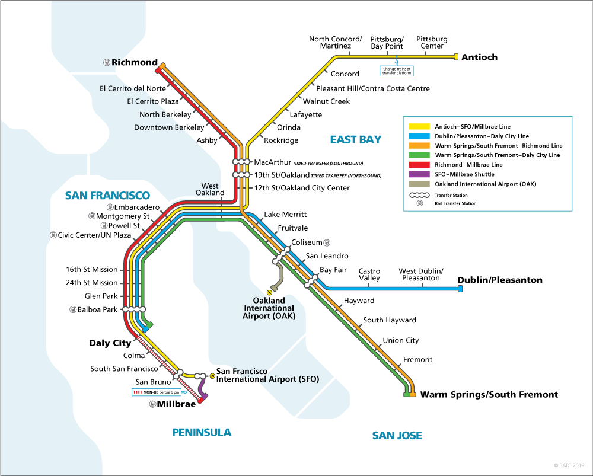

<ion-header [translucent]="true">
  <ion-toolbar>
    <ion-buttons slot="start">
      <ion-menu-button></ion-menu-button>
    </ion-buttons>
    <ion-title>BART API</ion-title>
  </ion-toolbar>
</ion-header>

<ion-content [fullscreen]="true">
  <ion-header collapse="condense">
    <ion-toolbar>
      <ion-title size="large">{{ station?.name }}</ion-title>
      <!-- <ion-label size="large">{{station?.etd  }}</ion-label> -->

    </ion-toolbar>
  </ion-header>

  <div id="container">
    
    <ion-card *ngFor="let d of station?.etd">
      <strong class="capitalize">{{station?.name}}</strong>
      <strong class="capitalize"> or {{ folder }}</strong>
      <br>
      <ion-label class="capitalize">Destination: {{d.destination}}</ion-label>
      <ion-card-content *ngFor="let e of d.estimate">
        Estimated Depature: {{e.minutes}}
      </ion-card-content>
    </ion-card> 
  </div>
</ion-content>
<!-- *ngFor = 'let  of station' -->